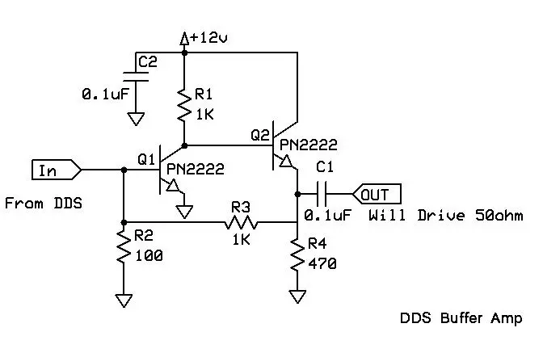

DDS Buffer Amplifier
The output my DDS is the unbuffered The voltage is rather low (~300mV P-P) but it drives active mixers (e.g. SA612) with no problem. But it is not sufficient to drive a diode ring mixer, or vintage radio. Consequently a buffer amplifier of some sort is needed.

This one works pretty well, connected to my DDS it would put out 2-3volts p-p. If you need more output change R3 to 2.2K and R2 to 220 ohms and you will get about 5v P-P but lots of high frequency roll off above 8MHz. But it would be good for vintage radios that use a 5MHz VFO. To improve the higher frequency performance one could make R3 two 1K resistors in series, with a 10pF cap from the center point to ground. I have not tested that version, but it looks good in the spice simulation.
The other benefit is that this amp drives a 50ohm load with no problem.